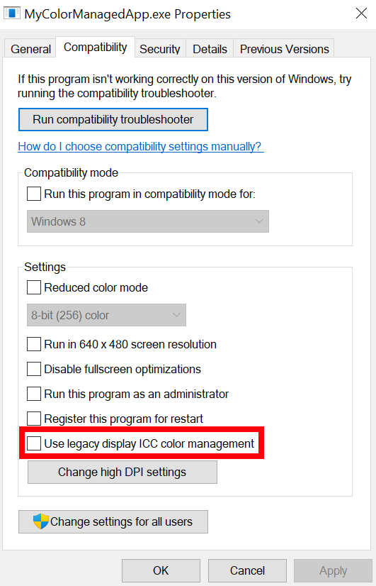

title: ICC profile behavior with Advanced Color description: This topic discusses how legacy color management and ICC profile behavior changes when Advanced Color scenarios are active. keywords:
Advanced Color is an umbrella term of OS technologies for displays with significantly higher color fidelity than standard displays. For more information, refer to Use DirectX with Advanced Color on high/standard dynamic range displays. Advanced Color and auto color management ensure consistent and colorimetrically accurate display color for all apps: both legacy and modern. However, your app might already perform its own explicit color management using International Color Consortium (ICC) color profiles.
When Advanced Color is active on either SDR or HDR displays, the behavior of display ICC profiles changes in non-backwards compatible ways. If your app works with display ICC profiles, then Windows offers compatibility helpers to ensure that your app continues to get correct behavior. Advanced Color-aware apps should transition away from directly interacting with display ICC profiles since Windows provides replacement app-facing APIs that abstract away the profile; full guidance is available at Use DirectX with Advanced Color on high/standard dynamic range displays.
This topic describes the changes in ICC profile behavior. In addition, if your color-managed app needs to continue using display ICC profiles, then this topic will show how to adapt your app to incrementally leverage Advanced Color benefits.
When Advanced Color is inactive, Windows doesn't perform any color management on your app's visual content output (for example, GDI hDC, DirectX swap chain, or composition visual); in practice, it assumes that your app content is in the standard sRGB color space. If you want accurate color reproduction on the active display, then your app must perform its own color management, most often using International Color Consortium (ICC) color profiles. The main conceptual steps are:
Here are more details on ech of the three steps.
A Win32 app uses the Windows Color System profile management functions to obtain the default ICC profile, which tells you the display's color characteristics, including its available color gamut.
A Universal Windows Platform app uses DisplayInformation.GetColorProfileAsync Method instead.
If the display's color space doesn't match your content's color space, then you must do a color space conversion. For example, digital content is often encoded as sRGB, but your display might be wide gamut DCI-P3. You'd typically use an ICC color management library that reads the ICC profile, and transforms your content's color values to match. Windows provides multiple ICC color management engines; for example, the Direct2D color management effect.
It's important to note that ICC profile-based color management is display-referred or output-referred. That means that color values are not stored as absolute (scene-referred) colors, but instead are encoded relative to the color space of the display (the output device). For example, if your app is rendering sRGB red, then that's represented as RGB(1, 0, 0) in your rendered output. But if you're rendering that content on an Adobe RGB display, then RGB(1, 0, 0) is simply interpreted by the display as its most saturated red (Adobe RGB red), which is incorrect. When you apply an ICC color transform, it will re-encode the color as RGB(0.858659, 0, 0), and when that's rendered by the Adobe RGB display, it will be reproduced correctly as sRGB red.
In addition to reinterpreting color values to match the display's color space, you need to handle the case where the display can't physically reproduce all the colors in your content; if your content's color gamut is larger than the display's. That process is called gamut mapping.
Gamut mapping is lossy because you have to make a tradeoff on how to approximate the larger gamut of the content. The most straightforward method is colorimetric, where colors that are within the display's gamut are preserved, and colors that are out of the gamut are clipped to the nearest in-gamut value.
In an ICC profile-based workflow, gamut mapping is typically handled automatically in the color management library. You have some control over the mapping behavior by selecting the rendering intent (see Rendering intent modes).
[!NOTE] When you're in an advanced color workflow, we generally don't recommend using the perceptual rendering intent, neither for source or destination, since it was designed for SDR sources and destinations that have smaller color gamuts than the ones used for HDR and some WCG displays; so using them can result in unexpected behavior.
When Advanced Color is active, Windows performs automatic system color management—it ensures that your app's color content is accurately reproduced on the display. That dramatically simplifies the required actions on your app, although advanced apps might continue to perform additional processing for maximum color and perceptual accuracy. For more information, refer to Use DirectX with Advanced Color on high/standard dynamic range displays.
Advanced Color-aware apps should not directly interact with the display ICC profile. Instead you can obtain the display's color properties using either DisplayInformation::GetAdvancedColorInfo or IDXGIOutput6.
Windows will perform the color space conversion to the display's color space determined by the current default color profile. If there is no profile, then EDID colorimetry data will be used. Your app automatically gets scene-referred color behavior—for example, if you render sRGB red encoded as RGB(1, 0, 0) and display to an Adobe RGB monitor, then Windows will correctly reproduce it as sRGB red. Advanced Color-aware apps should tag their content with the correct color space to inform Windows using IDXGISwapChain3::SetColorSpace1. For all non Advanced Color-aware apps that render to a standard integer pixel format (for example, 8-bit RGBA), Windows will explicitly treat the app as sRGB. If you wish to render AdobeRGB red in an Advanced Color scenario, then you'll need to render RGB(1.158157,0,0) in a scRGB tagged surface (it's constrained by the display's gamut).
The GPU's display pipeline will perform numeric clipping on out-of-gamut colors. If your app wishes to use a more sophisticated mapping, then you need to do that yourself.
Automatic system color management necessarily impacts the way that existing ICC profile-based apps behave, since they're performing many actions themselves that are now handled by the operating system (OS.) Windows applies the default behavior (described below) to ICC profile-based apps. That ensures that those apps don't have incorrect behavior. However, without further work, they won't get access to any of the extended color capabilities.
In particular, by default your ICC profile-based app is restricted to the sRGB gamut, even if the monitor is actually wider gamut. Windows also provides an ICC compatibility helper that can give your ICC app access to the display's entire gamut. For more info, see the Display ICC profile compatibility helper section in this topic.
When Advanced Color is active, any calls to the color profile management APIs to get the default profile for a display will return "no profile", regardless of what profiles are actually installed. By convention "no profile" should be interpreted as sRGB.
Display ICC profiles are still valid and used with Advanced Color, but they're used only at the system level, and most apps shouldn't directly interact with them. The below information is generally needed only if your app is a utility that enumerates all display profiles, or is authoring/installing profiles.
To enforce that, Windows adds the concept of STANDARD and EXTENDED color profile subtypes. That applies to any color profile management APIs that use the COLORPROFILESUBTYPE:
CPST_STANDARD_DISPLAY_COLOR_MODE
CPST_EXTENDED_DISPLAY_COLOR_MODE
[!NOTE]
STANDARDandEXTENDEDsubtypes are not a property stored within the profile itself; rather, they apply to the profile's association to a display (that is, when the profile is added to the display's profile association list). A single profile could be associated with bothSTANDARDandEXTENDEDsubtypes for a display, meaning that it would be available both for standard and Advanced Color scenarios.
Display profile associations that are intended for use in SDR—whether regular SDR or Advanced Color SDR—have subtype STANDARD (thiat's the default if no value is specified). Display profile associations for use in HDR mode are subtype EXTENDED. If your app doesn't specify a subtype, then that's interpreted as STANDARD.
Any getter API using COLORPROFILESUBTYPE will return only profiles with the matching STANDARD or EXTENDED subtype. For example, if HDR is active, the only display profiles with the EXTENDED subtype are valid for use, and STANDARD subtype profiles aren't used. Setter APIs can specify the subtype (STANDARD is the default).
Because the ICC profile management APIs return sRGB when Advanced Color is active, your ICC profile-based app will color-manage to sRGB, and Windows will correctly reproduce that as sRGB on the display.
Any existing gamut-mapping behavior is preserved.
When Advanced Color is active, Windows provides a compatibility helper for display ICC profiles that provides access to the display's entire gamut. In that way your app continues to get accurate and wide gamut colors up to the reported capability of the display—the same functionality that's available on calibrated wide gamut monitors in legacy non-Advanced Color mode today. Without that helper, your app will be limited to default behavior, which is sRGB (see ICC profile default behavior with Advanced Color).
That helper is available starting with Windows 11. It doesn't provide other benefits of Advanced Color including access to higher precision/bit-depth or high dynamic range—you'll need to modify your app to be Advanced Color-aware.
The display ICC compatibility helper is enabled on a per-app basis. It isn't enabled by default.
Users can enable it for an app by going to the Compatibility tab of the executable's properties, and selecting Use legacy display ICC color management. The compatibility helper is applied to the entire process, and is active only when Advanced Color is enabled for the display—it has no effect on a standard SDR display.

Windows automatically enables the helper for some popular apps that are known to use ICC color profile management.
There's no programmatic way to enable that compatibility helper for your app.
If the compatibility helper is active, then when your app queries for the default STANDARD color profile using the Windows Color System profile management functions, Windows constructs a synthetic ICC profile using the same data that populates the Advanced Color display capabilities APIs. The synthetic profile's data can come from a combination of the current color profile, from the display's EDID or DisplayID, or from other sources.
If your app queries for the default EXTENDED color profile, then that indicates that your app is Advanced Color-aware, and it will receive the actual EXTENDED profile.
If the compatibility helper is active, then your app is expected to use ICC color management to target the synthetic display profile. Windows assumes that your app is targeting that color space, and will perform the correct color space conversion to ensure it is accurately rendered on the display.
The color space conversion applies to the entire app process, so all of your app's visual content is treated as targeting the display's color space, even if some of it is not color managed and nominally targets sRGB (for example, UI). The color space conversion also is applied regardless of the graphics API (GDI, DirectX, XAML, and so on), pixel format, or other characteristics of your rendered content.
Any existing gamut-mapping behavior is preserved.
Users can verify whether the display ICC compatibility helper is active for an executable by checking its Compatibility properties tab. If your app shows info about the default display ICC profile, then users will see that it is a synthetic profile. The descriptive contents of the profile (including name) are an implementation detail.
The actual color behavior should be identical to when Advanced Color is disabled. In both cases, your app will render accurate colors that can access the full gamut of the display, as described by the ICC profile.